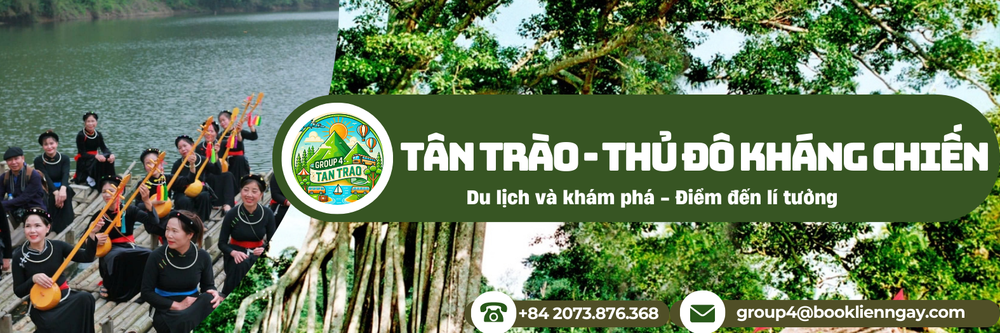

Tân Trào - vùng đất cách mạng, nơi lưu giữ những giá trị lịch sử trọng đại, hào hùng của dân tộc Việt Nam. Là "Thủ đô lâm thời khu giải phóng" trong thời kỳ Cách mạng Tháng Tám và là "Trung tâm Thủ đô kháng chiến" trong suốt những năm a Tân Trào, Lán Nà Nưa, Đình Tân Trào.....
🌿 Đến với Khu di tích Quốc gia đặc biệt Tân Trào, ngoài được tham quan các điểm di tích lịch sử, du khách còn được khám phá, trải nghiệm nét văn hóa đặc sắc của người dân tộc Tày tại làng văn hóa Tân Lập. Ngôi làng nằm ở trung tâm của Khu di tích, nơi chủ yếu đồng bào người dân tộc Tày sinh sống với những nếp nhà sàn truyền thống, không gian rộng rãi, thoáng mát, mang đậm đà bản sắc dân tộc được truyền lại qua các thế hệ, là điểm nhấn đặc biệt quan trọng trong quần thể Khu di tích Quốc gia đặc biệt Tân Trào.
🌸 Dừng chân tại đây, du khách sẽ thưởng thức những món ăn đặc sản tươi ngon được bà con chế biến theo từng mùa, ngủ lại bên nếp nhà sàn xinh xắn, nướng ngô, khoai, sắn, cùng nhau hát ca bên bếp lửa hồng.... Được sự quan tâm của Đảng, Nhà nước, chính quyền địa phương, Khu di tích Tân Trào đang ngày một thay da, đổi thịt. Hiện nay Khu di tích đang gấp rút hoàn thiện một số công trình trọng điểm chào mừng Kỷ niệm 80 năm Cách mạng tháng Tám như: Bảo tàng ATK Tân Trào, Quảng trường Tân Trào với "Tượng đài Bác Hồ ở Tân Trào" sẽ là điểm nhấn quan trọng để Tân Trào xứng đáng là địa chỉ đỏ về trung tâm giáo dục truyền thống cách mạng.
© 2021 Khu di tích lịch sử Tân Trào
Địa chỉ: Tân Trào, Sơn Dương, Tuyên Quang
Điện thoại: 0987654321